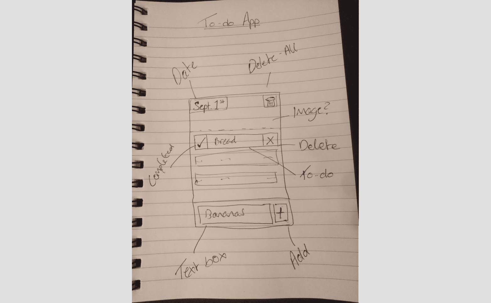
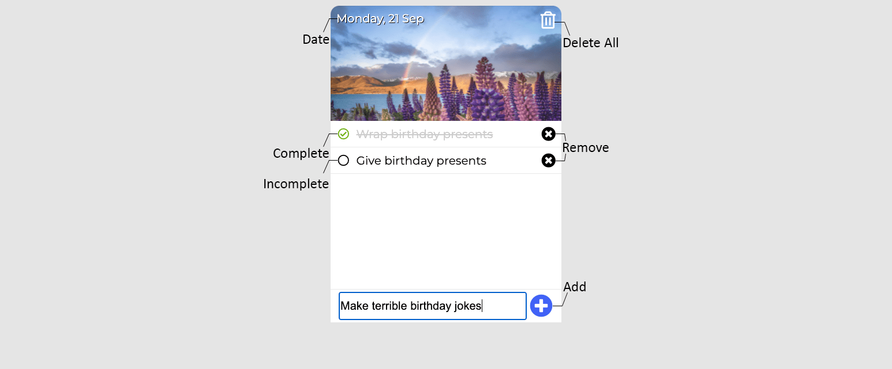
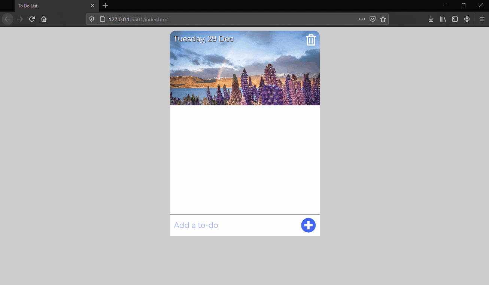

To-Do List
JavaScript, HTML, CSS
-
I personally find I'm more productive if I can follow a list, so I got to work making a rudimentary to-do list app.

-
My goal was to be able to add, remove, mark as complete and delete-all to-dos within the list.

-
As a finishing touch, I added the use of local storage so that my list would be saved for the next time I opened the app.

Click here for the code!